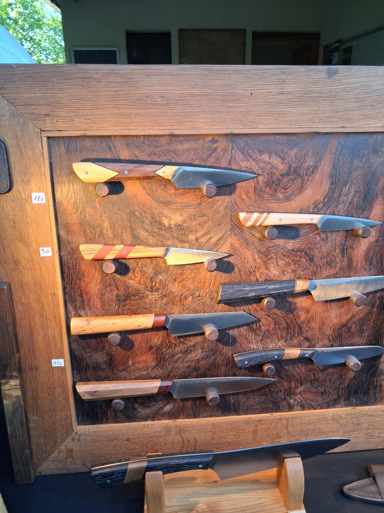
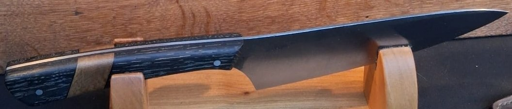
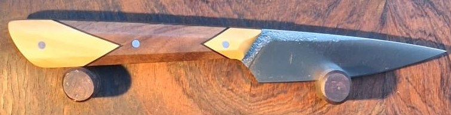
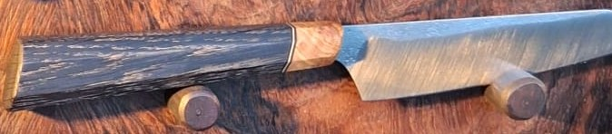
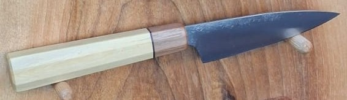
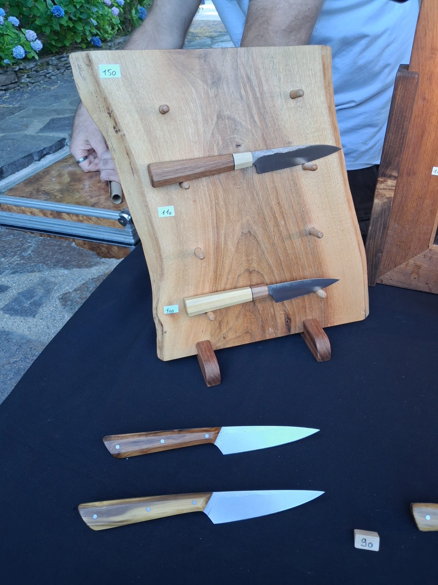

Forgés à la main,
dans les Cévennes.
Des couteaux de cuisine uniques, aux manches taillés dans les bois de la région.
Découvrir les couteauxLes couteaux disponibles
Une pièce, un exemplaire. Présentés en liste, du plus grand au plus petit.

Couteau de chef
Chêne des tourbières · lame 20 cm
240 €Voir le couteau →

Le Cévenol
Buis et noyer · lame 14 cm
180 €Voir le couteau →

Petit santoku
Chêne des tourbières, olivier · lame 13 cm
170 €Voir le couteau →

Couteau d'office
Buis et noyer · lame 10 cm
100 €Voir le couteau →

L'atelier
Chaque lame est forgée, trempée et affûtée ici, à la main. Les manches viennent du buis des causses, de l'olivier et du noyer du village.
Affûtage offert à vie. Couteaux sur mesure sur demande.
Une question ? Appelez-moi.
04 66 00 00 00Du lundi au vendredi, 9 h – 18 h · contact@coutellerie-du-mas.fr